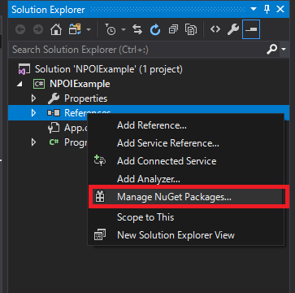
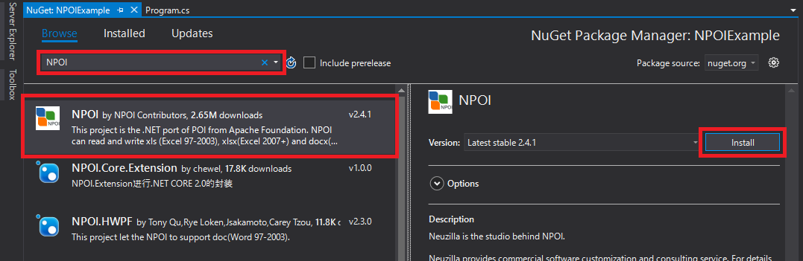
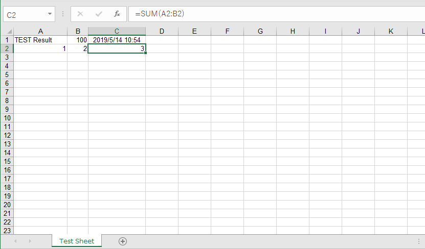

[C#] NPOIライブラリを利用してエクセルファイルを生成する方法
こんにちは。明月です。
この投稿はC#でNPOIライブラリを利用してエクセルファイルを生成する方法に関する説明です。
NPOIライブラリはApache財団で提供するエクセル、パワーポイント、ワードファイルフォーマットを運用するためのライブラリです。元はJavaのPOIライブラリから始まりましたが、C#でも使うためにNPOIの名でライブラリを提供していることです。
それならこれからNPOIを使ってエクセルを作成しましょう。
NPOIを使うためにNugetを利用してライブラリをダウンロードと連携します。


using System;
using System.IO;
//共通 NPOI
using NPOI;
using NPOI.SS.UserModel;
//標準xlsバージョン
using NPOI.HSSF;
using NPOI.HSSF.UserModel;
//拡張xlsxバージョン
using NPOI.XSSF;
using NPOI.XSSF.UserModel;
namespace NPOIExample
{
class Program
{
// 実行関数
static void Main(string[] args)
{
// エクセルバージョン設定
// xlsは標準エクセル、xlsxのMSの拡張エクセル
// ここでは標準エクセルで作成する。
var version = "xls";
//var version = "xlsx";
// Workbook生成
var workbook = CreateWorkbook(version);
// Workbookの中に"Test Sheet"名でシート(Sheet)生成
var sheet = workbook.CreateSheet("Test Sheet");
// シート(Sheet)からセルを取得する。(無ければ、自動生成)
// エクセル参考番号は A1だ。
var cell = GetCell(sheet, 0, 0);
// セルにデータを格納
cell.SetCellValue("TEST Result");
// シート(Sheet)からセルを取得する。(無ければ、自動生成)
// エクセル参考番号は B1だ。
cell = GetCell(sheet, 0, 1);
// セルにデータを格納
cell.SetCellValue(100);
// シート(Sheet)からセルを取得する。(無ければ、自動生成)
// エクセル参考番号は C1だ。
cell = GetCell(sheet, 0, 2);
// セルにデータを格納
cell.SetCellValue(DateTime.Now);
// セルにデータフォーマット設定
var style = workbook.CreateCellStyle();
// 日付フォーマット
style.DataFormat = HSSFDataFormat.GetBuiltinFormat("m/d/yy h:mm");
// 整列フォーマット
style.Alignment = HorizontalAlignment.Center;
style.VerticalAlignment = VerticalAlignment.Top;
// セルの色設定
style.FillBackgroundColor = IndexedColors.Gold.Index;
// フォント設定
var font = workbook.CreateFont();
font.Color = IndexedColors.Red.Index;
// 設定されたセルはC1だ。
cell.CellStyle = style;
// セルの幅を自動設定 A行
sheet.AutoSizeColumn(0);
// セルの幅を自動設定 B行
sheet.AutoSizeColumn(1);
// セルの幅を自動設定 C行
sheet.AutoSizeColumn(2);
// シート(Sheet)からセルを取得する。(無ければ、自動生成)
// エクセル参考番号は A2だ。
cell = GetCell(sheet, 1, 0);
// セルにデータを格納
cell.SetCellValue(1);
// シート(Sheet)からセルを取得する。(無ければ、自動生成)
// エクセル参考番号は B2だ。
cell = GetCell(sheet, 1, 1);
// セルにデータを格納
cell.SetCellValue(2);
// シート(Sheet)からセルを取得する。(無ければ、自動生成)
// エクセル参考番号は C2だ。
cell = GetCell(sheet, 1, 2);
// 関数式を設定 A2 + B2 = 1 + 2 = 3
cell.SetCellFormula("SUM(A2:B2)");
// セルを格納
WriteExcel(workbook, @"c:\work\test." + version);
// コンソール出力
Console.WriteLine("Press Any Key...");
Console.ReadKey();
}
// Workbook生成関数
public static IWorkbook CreateWorkbook(string version)
{
// 標準エクセル.xls
if ("xls".Equals(version))
{
// 標準エクセルWorkbookを割当
return new HSSFWorkbook();
}
// 拡張エクセル.xlsx
else if ("xlsx".Equals(version))
{
// 拡張エクセルWorkbookを割当
return new XSSFWorkbook();
}
// xlsとxlsxじゃなければ、エラー発生
throw new NotSupportedException();
}
// シート(Sheet)から行を取得関数
public static IRow GetRow(ISheet sheet, int rownum)
{
// シートから行を取得
var row = sheet.GetRow(rownum);
// 行がnullなら
if (row == null)
{
// シートから行を生成する。
row = sheet.CreateRow(rownum);
}
// 行をリターン
return row;
}
// 行から列を取得関数
public static ICell GetCell(IRow row, int cellnum)
{
// 行から列を取得
var cell = row.GetCell(cellnum);
// 列がnullなら
if (cell == null)
{
// 行から列を生成する。
cell = row.CreateCell(cellnum);
}
// 列をリターン
return cell;
}
// エクセルシート(Sheet)からセル取得関数(rownumは行、cellnumは列)
public static ICell GetCell(ISheet sheet, int rownum, int cellnum)
{
// 行を取得
var row = GetRow(sheet, rownum);
// 行から列を取得
return GetCell(row, cellnum);
}
// エクセルのWorkbookをファイルに格納する関数
public static void WriteExcel(IWorkbook workbook, string filepath)
{
// ファイルストリームを生成する。
using (var file = new FileStream(filepath, FileMode.Create, FileAccess.Write))
{
// 格納する。
workbook.Write(file);
}
}
}
}
これからエクセル生成したディレクトリに移動してファイルを開きましょう。

xlsバージョンとxlsxバージョンはnamespaceが違うし扱うクラスも違います。でも、クラスは違いますが、インタフェースは IWorkbook과 ISheetで作業するのでクラスを割り当てする時だけ分けて、次からはインタフェースで運用するとバージョン関係せずにエクセルを扱うことができます。
上の例では基本的にNPOIでよく使うデータ格納、関数式、色の設定、セルのスタイル設定まで実装しておきました。NPOIのAPIはすごく多いので、下記のURLのドキュメントを参考してください。
link - https://poi.apache.org/apidocs/
(Javaのドキュメントですが、使用方法はC#と同じです。)
でも、実際の業務ではExcelを始めから生成して出力することは少ないです。普通はExcelのテンプレートを作成して、そのテンプレートを参照して出力する方法で使います。
その方法に関しては別の投稿で紹介します。
ここまでC#でNPOIライブラリを利用してエクセルファイルを生成する方法に関する説明でした。
ご不明なところや間違いところがあればコメントしてください。
- [C#] 非同期ソケット通信(IOCP)-APMパターン2020/05/18 18:45:37
- [C#] 非同期ソケット通信(IOCP)-EAPパターン2020/05/15 19:31:02
- [C#] NPOIを利用してExcelを読み込んで出力する方法2020/05/08 10:43:52
- [C#] NPOIライブラリを利用してエクセルファイルを生成する方法2020/05/07 01:49:01
- [C#] Geckoライブラリを利用してウェブスクレイピングする方法2020/05/05 00:52:26
- [C#] PDFを作成する方法(iTextSharp)2020/05/03 10:22:40
- [C#] シリアライズ(Serialization)をする方法2020/04/30 19:32:04
- [C#] dynamicタイプの動的パラメータ-DynamicObject(WinFormでASP.MVCのViewBagオブジェクトを使用する方法)2020/04/29 22:41:32
- [C#] Stringの補間式(interpolation)2020/04/27 20:39:57
- [C#] Newtonsoft.JSONライブラリを利用してJsonデータ構造を扱う方法2020/04/23 20:19:53
- [C#] EMailを送信する方法(System.Net.Mail)2020/04/22 19:00:42
- [Java] 56. Web serviceのサーブレット(Servlet)で初期化作業(properties設定)2021/07/02 17:10:36
- [Java] 55. Spring frameworkに文字化けを解決する方法(Encoding設定)2021/06/30 16:37:16
- [Java] 54. Spring frameworkでWeb filterを使う方法2021/06/29 18:25:12
- [Java] 53. ウェブサービス(Web service)でエラーページを処理する方法2021/06/25 13:35:54
- [Design pattern] 1-3. ファクトリメソッドパターン(Factory method pattern)2021/06/23 19:45:37
- [Java] WebSocketでチャット履歴をローディングする方法2021/06/15 18:34:45
- [Java] WebSocketを利用してユーザ(サイト運用者)が他のユーザとチャットする方法2021/06/15 17:20:08
- [Design pattern] 1-2. ビルダーパターン(Builder pattern)2021/06/11 19:06:28
- [Design pattern] 1-1. シングルトンパターン(Singleton pattern)2021/06/09 19:40:05
- [Design Pattern] デザインパターンの紹介2021/06/08 20:42:36
- [Tools] Dbeaver(無料Sql queryブラウザツール)2021/04/28 18:26:49
- [Bootstrap] HTMLデザインのフレームワークのBootstrap紹介2020/07/30 19:06:36
- [Python] メール(smtplib)を送信する方法2020/07/27 18:38:43
- [Python] HttpConnection(requestsモジュール)でウェブサーバーで接続する方法2020/07/20 14:41:51
- [Python] Excel(openpyxl)を扱う方法2020/07/16 16:40:31